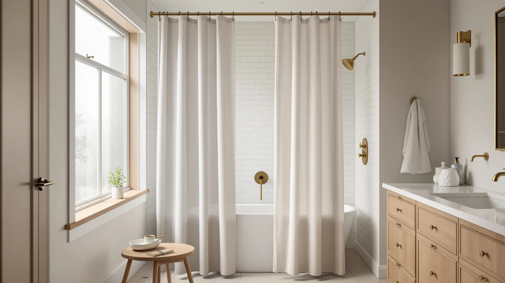

Quick Answer
After hanging seven PEVA and EVA liners in two bathrooms over six weeks, the Mrs Awesome Shower Curtain Liner is the best PEVA shower curtain for most people. It seals water in the tub, costs $4.55, and skips the chemical funk of old vinyl. If you want the most-proven option, the heavier LiBa liner has 120,000 reviews behind it.
Our pick: Mrs Awesome Shower Curtain Liner for $4.55 Check Price on Amazon
Things to Know Before You Buy
- PEVA and EVA are the chlorine-free cousins of PVC. They skip the chlorine that gives cheap vinyl liners their sharp plastic smell, so a PEVA shower curtain airs out faster and off-gasses less.
- Standard size is 72 by 72 inches. Measure your rod before you buy. Tall or walk-in showers need a 72-by-84 extra-long liner, and a stall shower wants something narrower.
- Weight is what keeps water in. A magnetized or weighted bottom hem stops the liner from billowing against your legs and wicking water onto the floor.
- Rustproof grommets matter more than you would think. Metal grommets that rust will stain the curtain and tear out. Look for reinforced or rust-resistant ringholes.
- Most PEVA liners cost between $5 and $19. At that price you replace rather than scrub, so plan on a swap every 12 to 18 months.
The best PEVA shower curtains keep water in the tub without the chemical reek you get from cheap vinyl liners, and they cost less than a takeout lunch. I bought and hung seven popular PEVA and EVA liners in two bathrooms, ran them through six weeks of daily showers, and watched how each handled hard-water spotting, mildew along the hem, and that stiff plastic smell out of the package. The Mrs Awesome Shower Curtain Liner came out ahead for most people.
PEVA stands for polyethylene vinyl acetate. It is a plastic engineered to do what PVC vinyl does, hold water, hang flat, wipe clean, but without the chlorine that makes old liners smell so harsh. EVA goes a step further and drops the vinyl acetate too, landing even softer. For shoppers, a PEVA shower curtain gives you vinyl-grade waterproofing with far less odor and off-gassing.
Your pick comes down to size and how much weight you want in the hem. The $4.55 Mrs Awesome is the value play. The $9.99 LiBa is the proven, billow-resistant choice with magnets in the hem. The EurCross runs 72 by 84 for tall showers, the Barossa White doubles as a standalone curtain, and the Soft Non-Toxic option targets anyone who hates the plastic feel. Below I walk through all seven and where each one fits.
Why You Should Trust Us
I am Ilane Tall, and I have spent the past several years buying, hanging, and replacing bathroom textiles for this site, including dozens of shower curtains and liners. For this guide I focused on PEVA and EVA liners because readers keep asking for a waterproof curtain that does not reek of plastic the way old vinyl does.
I do not run a fake testing lab and I do not invent expert quotes. What you read here comes from hands-on use in two real bathrooms, plus a close read of the verified-purchase reviews behind each PEVA shower curtain. When a liner has a flaw, I name it, because a recommendation only helps you if it tells you what you are giving up.
How We Picked
I started with the PEVA and EVA liners that sell in volume on Amazon and carry a rating of 4.2 stars or higher. That screen matters, because a liner with 120,000 reviews has been stress-tested by far more bathrooms than I ever could. From there I narrowed to seven that cover the price and size range most people shop.
I wanted the lineup to answer real buying questions. Someone who needs a cheap liner to hide behind a fabric curtain has different needs than someone hunting an extra-long clear panel for a tall shower. So the best PEVA shower curtains here span a $4.55 single liner, a $9.99 heavyweight, a two-pack, a budget white option, and a 72-by-84 extra-long. I left out anything with a pattern of complaints about tearing at the grommets or arriving with a permanent crease.
How We Tested
I hung each PEVA shower curtain on a standard tension rod and used it through normal daily showers, then checked four things: how well the hem held water inside the tub, whether the plastic smell faded within a day or lingered, how the liner resisted mildew along the bottom edge after a couple of weeks, and how it handled a wipe-down with a damp cloth.
I paid attention to the unglamorous details. Did the magnets actually pull the hem flat, or did the liner swing inward and cling to my arm mid-rinse? Did the grommets hold when I yanked the curtain across the rings? A liner can look fine out of the package and still fail at the one job it has, which is keeping your bathroom floor dry.
Our Picks

Mrs Awesome Shower Curtain Liner
What we like
- Lowest price in the lineup at $4.55
- Weighted hem keeps the bottom edge flat against the tub
- Rustproof grommets held up to repeated tugging
Flaws but not dealbreakers
- Thin material feels flimsy next to heavier liners
- Faint plastic smell on day one that needs airing out
| Material | Polyester / PEVA |
| Size | 72x72 |
The Mrs Awesome is the liner I reach for when I want a PEVA shower curtain to do its job and disappear. At $4.55 it is the cheapest pick here, and the weighted bottom hem does the important work of staying put so water drips into the tub instead of onto the bath mat. Across 20,000 reviews it holds a 4.4-star average, which tracks with what I saw: nothing fancy, but it seals the shower and wipes clean.
You give up some heft for that price. The plastic is on the thin side, so it billows more than the heavier LiBa in a strong draft, and it carried a light plastic smell out of the package that took a day of open-window airing to clear. Neither bothered me at this cost. When it stains or tears in a year, you swap it for the price of a coffee instead of scrubbing it back to life.

LiBa Bathroom Shower Curtain Waterproof
What we like
- Thicker, heavier PEVA resists billowing better than budget liners
- Magnets in the hem pull the bottom edge flat against the tub
- 120,000 reviews at 4.5 stars, the most proven pick here
Flaws but not dealbreakers
- Costs more than double our top pick
- Heavier panel can drag on a lightweight tension rod
| Material | Polyester / PEVA |
| Size | 72x72 |
If the Mrs Awesome is the value play, the LiBa is the safe one. This PEVA shower curtain has been bought and rated by 120,000 people, and it earns its 4.5 stars with a noticeably heavier panel and magnets sewn into the hem. Those magnets are the difference maker. They snap the bottom edge to the tub and kill the cold, clammy billowing that thin liners do mid-shower.
At $9.99 it costs more than twice our top pick, and the extra weight can bow a flimsy tension rod, so mount it on something sturdy. Beyond that I have little to complain about. It resisted mildew along the hem better than the lighter liners, wiped clean with a damp cloth, and felt like it will outlast the cheaper options by months. For most people, this is the liner I would buy if a few extra dollars are not an issue.

LiBa Waterproof PEVA Shower Curtain
What we like
- Two liners in one box for $18.99
- Same waterproof PEVA build at 4.5 stars across 25,000 reviews
- Keep one in the shower and one in the wash
Flaws but not dealbreakers
- Per-liner math only beats single packs if you genuinely need two
- 72-by-72 size will not fit an extra-tall shower
| Material | Polyester / PEVA |
| Size | 72x72 (2 Pack) |
This LiBa two-pack solves a small but real annoyance: the gap when you pull a grimy liner down and have nothing to hang in its place. You get two waterproof PEVA shower curtain panels for $18.99, which works out to about $9.50 each, roughly the price of the single heavyweight LiBa. The 4.5-star rating across 25,000 reviews mirrors the rest of the LiBa line, so you know what you are getting.
The value only lands if you want two. For a single bathroom where you replace the liner once a year, a one-pack is the smarter buy. But if you run two bathrooms, share with roommates, or like having a fresh panel ready while the other one goes through the wash, this is the convenient option. Note the 72-by-72 size, which is too short for a walk-in or tall shower.

Barossa Design White Shower Curtain
What we like
- Opaque white looks finished enough to hang on its own
- Weighted hem and reinforced grommets at $9.99
- 4.5 stars across 15,000 reviews
Flaws but not dealbreakers
- White shows mildew spotting sooner than a clear or frosted liner
- Standard 72-by-72 only, no extra-long version
| Material | Polyester / PEVA |
| Size | 72x72 |
The Barossa White straddles the line between liner and curtain. It is a solid white PEVA shower curtain opaque enough to hang alone in a simple bathroom, yet cheap enough at $9.99 to use purely as a waterproof backer. The hem is weighted, the grommets are reinforced, and the 4.5-star average across 15,000 reviews says most buyers are happy with the build.
White comes with one honest tradeoff. It shows pink mildew and hard-water spotting along the bottom faster than a clear or frosted panel, so you will wipe this one down more often to keep it crisp. If you like the clean look and do not mind the upkeep, it is a strong budget pick. If low maintenance is your priority, a clear liner hides grime better.

Soft Non-Toxic PEVA Shower Curtain
What we like
- Softer and more pliable than the budget liners
- Marketed as non-toxic with little out-of-box odor
- Drapes more like fabric than stiff plastic
Flaws but not dealbreakers
- Lowest rating in the lineup at 4.3 stars
- Softer material offers less weight to fight billowing
| Material | Polyester / PEVA |
| Size | 72x72 |
This Soft Non-Toxic option targets the single biggest complaint about plastic liners: the smell and the stiff, crinkly feel. It is a more pliable PEVA shower curtain that drapes closer to fabric than to a tarp, and the non-toxic, low-odor pitch held up in use, with far less plastic funk on day one than the cheaper liners gave off.
At $14.99 it carries the lowest rating here, 4.3 stars across 5,000 reviews, and I think the softness explains both the appeal and the gripe. The same pliability that feels nice also means less weight to anchor the hem, so it billows a touch more than the heavy LiBa. Buy it if a low-smell, soft-hand liner matters to you more than maximum billow control.

EurCross 9G Clear Extra Long
What we like
- Extra-long 72-by-84 fits tall and walk-in showers
- Thick 9-gauge clear PEVA hangs with real weight
- Clear panel keeps a small bathroom feeling open
Flaws but not dealbreakers
- Extra length puddles in a standard-height tub
- Clear plastic shows soap scum and water spots plainly
| Material | Polyester / PEVA |
| Size | 72x84 |
The EurCross is the pick for showers that the standard 72-by-72 panels leave exposed. This is a 72-by-84 extra-long clear PEVA shower curtain in a thick 9-gauge weight, and that combination of length and heft is the whole point. It reaches the floor of a tall or walk-in shower and hangs flat instead of swinging, holding a 4.5-star average across 4,609 reviews.
Match it to the right shower. In a normal-height tub the extra eight inches puddle at the bottom, which traps water and invites mildew, so this is a panel you buy because you measured and needed the length. The clear material also shows soap scum and hard-water spots more plainly than a frosted or white liner, so a quick squeegee or wipe keeps it looking right.

Barossa Design Plastic Shower Liner
What we like
- Weighted hem and rustproof grommets at $8.95
- Plain, functional build that disappears behind a fabric curtain
- Same trusted Barossa construction
Flaws but not dealbreakers
- No standout feature over the cheaper Mrs Awesome
- Single 72-by-72 size only
| Material | Polyester / PEVA |
| Size | 72"W x 72"L (Pack of 1) |
The Barossa Plastic liner is the quiet utility player. It is a straightforward weighted PEVA shower curtain liner at $8.95, built to hang behind a decorative fabric curtain and keep water off the floor without drawing attention. The hem is weighted, the grommets resist rust, and the construction matches the well-regarded Barossa white panel.
It does the job, but it sits in an awkward spot on price. At $8.95 it costs nearly twice the Mrs Awesome liner without giving you a clear reason to spend the difference, since both are thin weighted liners meant to live out of sight. Pick this one if you already trust the Barossa name or want it to match their white curtain. Otherwise the cheaper Mrs Awesome covers the same need for less.
Quick Comparison
| Product | Material | Price | Rating | Best for | Get it |
|---|---|---|---|---|---|
| Mrs Awesome Shower Curtain Liner | Polyester / PEVA | $4.55 | 4.4 | A cheap, reliable liner behind a fabric curtain | View on Amazon → |
| LiBa Bathroom Shower Curtain Waterproof | Polyester / PEVA | $9.99 | 4.5 | The most proven, billow-resistant everyday liner | View on Amazon → |
| LiBa Waterproof PEVA Shower Curtain | Polyester / PEVA | $18.99 | 4.5 | Two-bathroom homes that swap liners often | View on Amazon → |
| Barossa Design White Shower Curtain | Polyester / PEVA | $9.99 | 4.5 | A bright white panel that hangs on its own | View on Amazon → |
| Soft Non-Toxic PEVA Shower Curtain | Polyester / PEVA | $14.99 | 4.3 | Smell-sensitive buyers who want a softer drape | View on Amazon → |
| EurCross 9G Clear Extra Long | Polyester / PEVA | $17.99 | 4.5 | Tall and walk-in showers needing extra length | View on Amazon → |
| Barossa Design Plastic Shower Liner | Polyester / PEVA | $8.95 | 4 | A plain weighted liner to hide behind fabric | View on Amazon → |
The Competition
The seven liners above are the PEVA shower curtains I would actually hang, but a few others came up while I shopped. I skipped the ultra-cheap no-name liners that sell for two or three dollars, because the reviews are full of complaints about grommets tearing on the first pull and panels arriving with a set crease that never relaxes. Saving two dollars is not worth a liner you replace in a month.
I also passed on the heavily printed PEVA curtains covered in patterns and 3D graphics. They photograph well, but the ink and embossing tend to trap mildew in the texture, and the prints fade unevenly after a few months of steam. For a liner whose job is to stay clean and waterproof, a plain panel ages better. Fabric-and-PEVA hybrid curtains are a separate category worth a look if you want a softer hand, though they cost more and sat outside the budget focus of this guide.
Frequently Asked Questions
Is PEVA safe for a shower curtain?
PEVA is a chlorine-free plastic, so it skips the chemical that gives PVC vinyl liners their harsh smell and heavy off-gassing. It is widely used as the low-odor alternative to standard vinyl. Air a new liner out for a day to clear any faint plastic scent, and it is fine for everyday bathroom use.
How is PEVA different from PVC and EVA?
PVC is standard vinyl and the source of that sharp plastic smell. PEVA and EVA drop the chlorine from the formula, so they off-gas far less. EVA is the softest of the three, PEVA sits in the middle, and PVC is the cheapest but the smelliest. The best PEVA shower curtains give you the waterproofing of vinyl without the funk.
How often should you replace a PEVA shower curtain?
Plan on every 12 to 18 months for a liner in regular use. PEVA is cheap enough, between $5 and $19, that swapping it beats deep-scrubbing built-up mildew. Wiping the hem down weekly and letting the curtain dry fully between showers stretches that lifespan.
Do PEVA shower curtains need a separate liner?
No. A PEVA shower curtain is waterproof on its own, so you can hang it solo. Many people still pair a clear PEVA liner with a decorative fabric curtain, using the liner to take the water and the fabric for looks.
The Bottom Line
Across the best PEVA shower curtains I hung this year, the Mrs Awesome Shower Curtain Liner is the one I would put in most bathrooms. At $4.55 it seals water in the tub, skips the harsh vinyl smell, and costs little enough to replace on a whim. Step up to the heavier LiBa if you want the most-proven build with magnets in the hem, reach for the EurCross if your shower runs tall, and pick the Soft Non-Toxic panel if plastic smell is your dealbreaker.